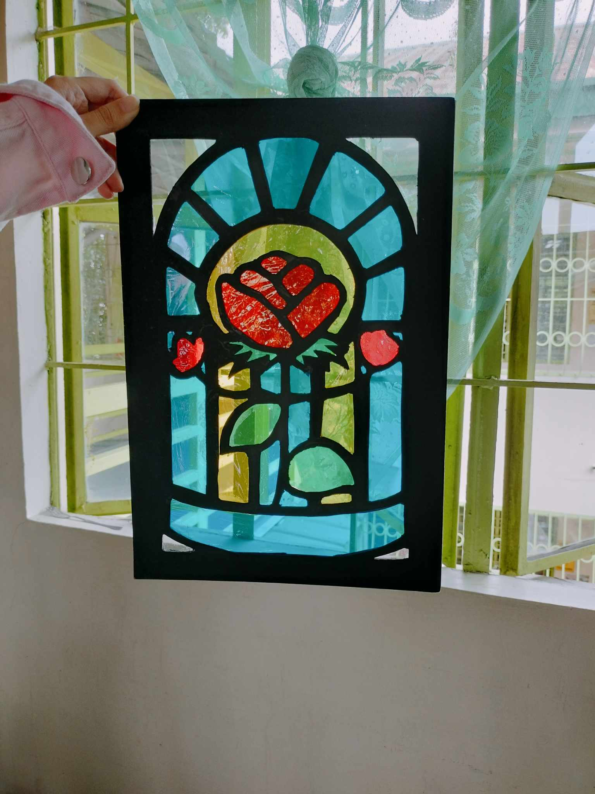
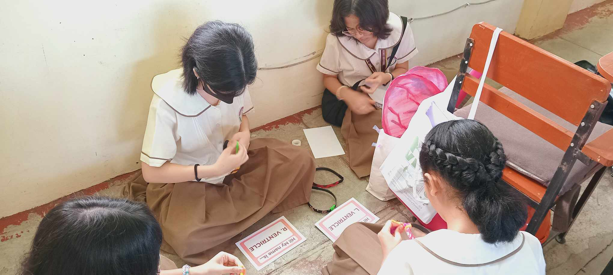
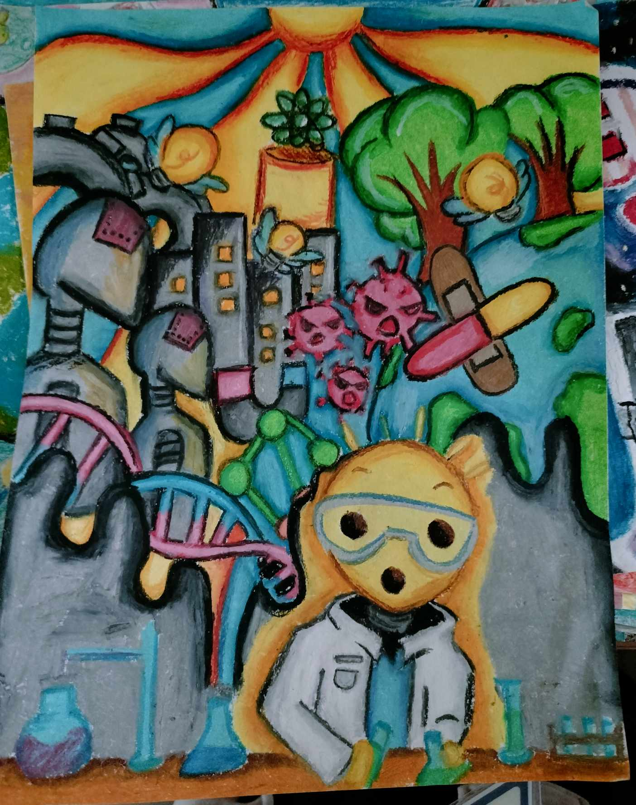
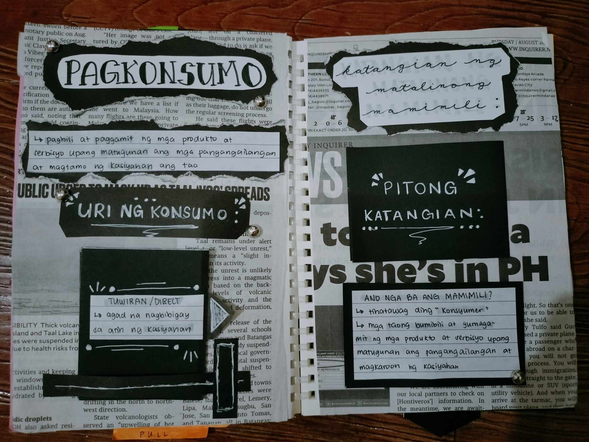

| ACTIVITES! | DESCRPTION! |
|---|---|
|  | This STAINED GLASS ACTIVITY is my favorite output in MAPEH. This output needed 3 people and my groupmates were Jandi and Venice. Since we are non-Catholics, we decided to go for a design unrelated to religion. Our inspiration was the Beauty and the Beast rose shown in the movie. For this task, we were a bit stressed, because of the limited time we had. Fortunately, we were able to finish it on time and receive a very very high grade!! |
|  | This is the SCIENCE CIRCULATORY AND RESPIRATORY SYSTEM PT. This is one of the highlights of my 1st Quarter!! My role for this performance task was the Props Manager. I'm very proud of this, because not only did Ms. complimented the props, but she also gave us a perfect score!! I'm also very happy and proud of my groupmates, because they were able to show a very fun roleplay and make all our hardwork worth it in the end! |
This is the MAPEH MUSIC VIDEO. The theme for this performance task is helping our environment. Making this was very fun!! I'm especially thankful for our leader, because she coordinated the scenes and edited our video. |
|
|  | This is my POSTER for SCIENCE MONTH. In my perspective, I'm not quite proud with my poster, since it's a bit too simple. However, I'm glad that I was able to finish it under limited time and get a higher grade than I expected! I will try my best to become more creative with the next poster. |
|  | This my favorite page in my AP INTERACTIVE NOTBOOK. For this notebook, we had to write down the lessons we learned in AP and make them interactive and show creativity. Making this interactive notebook left a big mess in my room. However, I'm very satisfied with the score that I recieved and I will try my best to show a better output for the next quarter!! |